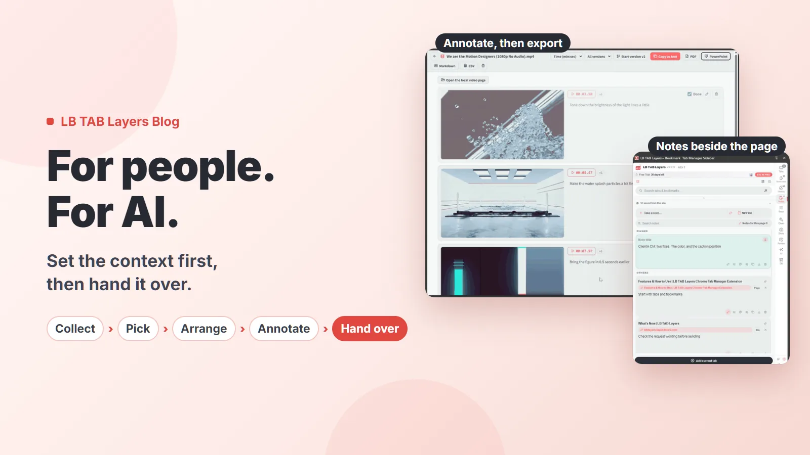
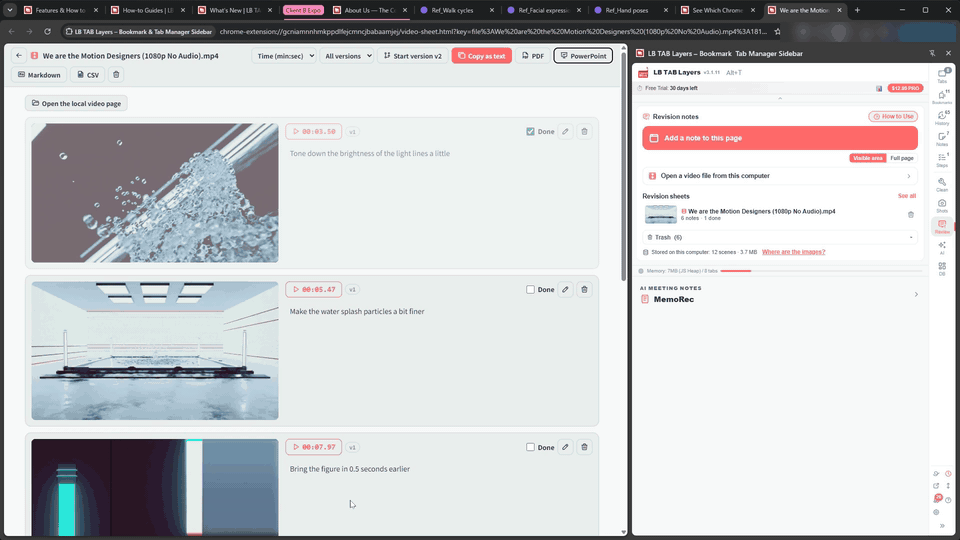
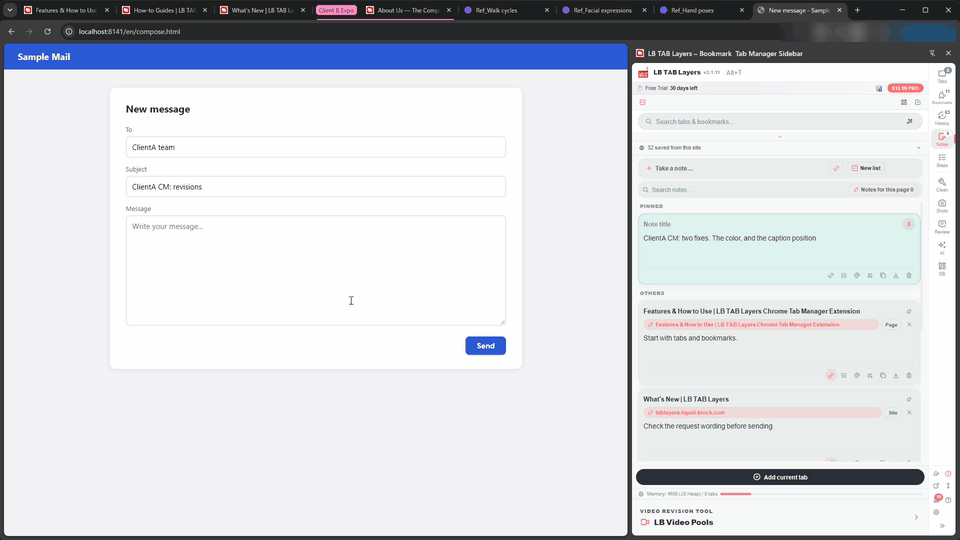

Whether you brief a colleague or ask an AI, set the context first and hand over material that is ready. Because the other side can only see what you give them. If the material arrives scattered, they have to sort it out before they can even start — so the reply comes later, and drifts from what you meant. Prep means getting on the same page: what it is for, what it is based on, and where to look. LB TAB Layers speeds up that prep — collect, pick, arrange, annotate, and make it ready to hand over — in the side panel next to the page. Then you hand it over the way you always do.
When you ask a colleague to do something, and when you ask an AI a question, we think the first step is the same: get it in order, then hand it over.
This article breaks that prep into five steps and explains, for each one, why it matters. After each “because”, we show the LB TAB Layers features that make that step faster.
Hand over material that is ready, and what comes back changes
Whether the other side is a person or an AI, material that is ready gets better answers, in fewer rounds.
Because the other side can only see what you give them. A person doesn’t know what is in your head. An AI can only think about the text and files you paste in. Hand over scattered material, and they have to sort it out first. The reply takes longer, and it drifts further from what you meant.
Put another way, the prep is about setting the context — getting on the same page. What is it for? What is it based on? Where should they look? When the context is missing, the other side fills the gaps with guesses. That is where the off-target answers and the rework come from. So: make setting the context lighter work, and hand over something that is ready.
The prep comes in five steps.
| Prep step | Why it matters | LB TAB Layers features |
|---|---|---|
| 1. Collect | So you never hunt for the source right before you hand it over | Save tabs to groups by job · Reference board |
| 2. Pick and arrange | Fewer options make sharper thinking | 📥 Sort later · select mode · reorder on the board |
| 3. Annotate | One line of intent and nobody has to guess | Notes for this page · pause a video and write |
| 4. Make it ready (for people) | So they can open it and pass it around as is | PDF · PowerPoint · ZIP · Copy as text |
| 5. Make it ready (for AI) | Pasted together with sources, nothing is missed and answers can be checked | Hand to AI · Copy & export in bulk · Send to NotebookLM |
And hand it over the way you always do — email, chat, your team’s shared folder. You already have the sharing tools.
Step 1: Collect — with the source attached
When you collect, the key is to keep the source (the address) together with what you collect.
Because if you have to hunt for “which page was that?” right before you hand it over, everything stops there. Material without a source is material you can’t explain when someone asks. And you can’t check an AI’s answer against the original page.
With LB TAB Layers
- Save your open tabs to a group for each job and close them with ■. Next time, reopen them all with ▶. Groups are saved as Chrome bookmarks, so they stay even if you remove the extension.
- Images, screenshots and video frames (stills taken at a fixed interval) go onto the Reference board together with the image and page addresses and the video timestamp (PRO).
Step 2: Pick and arrange — collect first, sort later
Once you have collected, pick what to hand over and put it in an order that makes sense. The trick is to collect and sort at different times.
Because sorting while you collect takes too much of your head. If you are deciding “which category is this?” in the middle of searching, you can’t focus on the search. Collect first, then pick and arrange in one go — it is faster.
One more thing: fewer options make sharper thinking. Hand over too many candidates and the other side gets lost too. Do the picking yourself before you hand it over.
With LB TAB Layers
- No time to decide where something goes? Press Ctrl+Shift+S to drop the current page into the 📥 Sort later group.
- Later, switch to select mode, pick several pages and move them together with To group.
- On the Reference board you can reorder items and add a one-line note, then export only the ones you choose (PRO).
Step 3: Annotate — one line changes how it lands
For each thing you picked, add one line on why you picked it, or where to look.
Because hand over material alone, and the other side starts by figuring out where to look. “The color here” or “the pacing at 0:12” — with one line like that, neither a person nor an AI has to guess.
Annotating helps you too. Writing it down once before you hand it over sorts out what you actually want to say. The message gets clearer, and there is less to redo.
With LB TAB Layers
- Attach a note to the page you’re viewing. Select text on a page, right-click and choose Add selection to Notes to add it to that page’s note.
- Right-click a saved tab to add a one-line note on why you saved it.
- For videos: pause, write, press Enter. The frame and its timecode are saved with your note, and playback continues (revision notes, PRO).
How the video notes work is covered in video feedback with timestamps in Chrome.
From our studio: the slow part was setting the context and handing it over
We are a video and motion graphics studio in Kobe, Japan. We have also gone ahead without setting the context — and nearly ended up in a dispute. What the production side takes for granted and what the client side takes for granted are not the same. On one project, we assumed it would work without a narrator. Later, it turned out a narration was needed. Had we set the context at the start, we could have avoided it.
Collecting references was the same story. We would gather reference images, then lay them out again in Illustrator or PowerPoint and prepare the source addresses — because we couldn’t send a client a Pinterest board, and clients usually share things internally as PowerPoint or PDF. That re-layout was a real chore.
What we realized is that the slow part was not “making” — it was setting the context and getting things ready to hand over. It is the same whether the other side is a person or an AI. So now our rule is simple: whether it’s for a person or an AI, get it in order first, then hand it over. We build LB TAB Layers to make that faster.
Step 4: Make it ready — when you hand it to people
For people, make it something they can open and pass around as is.
Because if they can’t open it as it is, it stops there. Clients and managers pass what they receive around their organization — usually as PDF or PowerPoint.
With LB TAB Layers
- Revision notes become a PDF or PowerPoint with a cover page, a list of the revision points and a page for each moment. Copy as text gives you a numbered list (①②③…) ready to paste into chat or email (PRO).
- Your screenshots can be saved together with Save all as PowerPoint (5 layouts) or ZIP, for free. PDF is a PRO feature.
- The Reference board exports to ZIP (with a list of addresses), PowerPoint and PDF, with the source address under each image (PRO).

Step 5: Make it ready — when you hand it to AI
For AI, hand over the pages and notes you picked, together, with their sources.
Because an AI can only think about what you paste in. Opening pages one by one, copying and pasting each takes time — and things get missed. With the sources (addresses) included, you can check the answer against the original pages.
We see AI not as an extension of searching, but as a way to sharpen your own thinking. That is exactly why you want to choose what goes in yourself.
With LB TAB Layers
- Hand to AI: from a group’s right-click menu or select mode, copy pages and notes together in a form that is easy to paste into an AI (PRO).
- Copy & export in bulk: copy the pages you selected as URLs only, titles and URLs, Markdown, HTML or CSV (PRO). Copying a group or a page as Markdown is free.
- Send to NotebookLM: send the selected pages to a NotebookLM notebook. You need to be signed in to Google (PRO).
- Insert into the page: put a note’s text into the input field you last clicked on the page — an email or chat box, for example (PRO).

Every feature is shown with an animation in Help: Share. For NotebookLM, see how to send your tabs to NotebookLM.
Hand it over the way you always do
Once the prep is done, hand it over the way you already do.
Because you already have the sharing tools. Email, chat, your team’s shared folder — the route to the other side is usually set. Ask them to learn a new place to share, or to create an account, and it stops there. Some companies don’t allow outside sharing services at all.
That is why LB TAB Layers has no sharing space and no accounts of its own. It is not a missing feature; it is a choice. Finish the prep quickly on your own machine, and hand it over through the route you already use.
With LB TAB Layers
- The PDF, PowerPoint and ZIP files you export, and the text you copy, open fine for people who don’t have LB TAB Layers.
- No account needed. Groups and tabs are saved as Chrome bookmarks; notes, captures and revision notes are stored on this computer. Nothing is sent to our servers (except an anonymous ID used to check the license). AI features send data only when you use them, and only to the service you choose.
Summary: faster prep, more time to think
For people, and for AI: set the context and get things ready before you hand them over, and what comes back gets better — in fewer rounds.
| Do this | Because |
|---|---|
| Collect with the source attached | Hunting for it right before you hand it over stops you cold |
| Pick and arrange after collecting | Sorting while you collect takes too much of your head |
| Add one line | Without it, they start by figuring out where to look |
| For people: a format they can open and pass around | If they can’t open it, it stops there |
| For AI: everything together, with sources | An AI can only think about what you paste in |
| Hand it over the usual way | You already have the sharing tools |
Make setting the context lighter work, and hand over something ready. LB TAB Layers does that prep in the side panel right next to the page — and the time you save goes back into thinking.
You can use up to 5 groups for free. PRO features (Hand to AI, Copy & export in bulk, revision notes, the Reference board, PDF export and more) are all available during the 30-day trial after you install. PRO is a one-time purchase of $12.99. No account needed.
Frequently asked questions
Q. What is the best way to hand material to an AI?
Paste the pages and notes you picked together, with their sources (addresses). An AI can only think about what you paste in, so pasting everything at once misses less than pasting one page at a time — and you can check the answer against the original pages. In LB TAB Layers, “Hand to AI” copies pages and notes together in a form that is easy to paste (PRO).
Q. Does the other person need LB TAB Layers too?
No. The PDF, PowerPoint and ZIP files you export, and the text you copy, open fine without LB TAB Layers. You hand them over the way you already do — email, chat, or a shared folder.
Q. Is there a sharing feature or an account?
No. We assume you already have the tools you share with. LB TAB Layers focuses on making the prep before you hand things over faster. There is no account to create.
Q. What can I do for free?
Up to 5 groups are free. Copying a group or page as Markdown and saving screenshots as PowerPoint or ZIP are free too. Hand to AI, Copy & export in bulk, revision notes, the Reference board and PDF export are PRO features, all available during the 30-day trial.
Q. Where is what I collect stored?
Groups and tabs are saved as Chrome bookmarks. Notes, captures and revision notes are stored on this computer. Nothing is sent to our servers, except an anonymous ID used to check the license.
See it in action


For people, and for AI. Do the prep beside your browser.
Collect, pick, annotate, and make it ready to hand over. No account needed · hand it over the way you always do · every feature free for 30 days.
Add to Chrome — it's free →